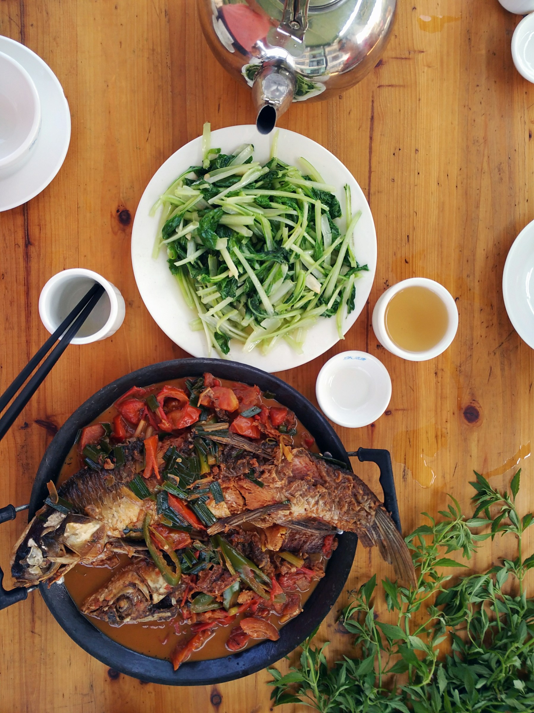

Online bestellen
Kies zelf wanneer en hoe laat je je bestelling ophaalt, ook ruim van tevoren. Je betaalt vooraf met iDEAL.
Naar online bestellenHeilaarstraat 237, Breda
Specialiteiten uit de Kantonese, Pekingse, Szechuaanse en Shanghaise keuken. En natuurlijk de bekende favorieten zoals foe yong hai en babi pangang. Aan tafel, om af te halen of als catering.
Het afhaalgedeelte is populair in de omgeving. Bestellen kan op drie manieren; ophalen doe je altijd bij ons aan de Heilaarstraat. We bezorgen niet.
Kies zelf wanneer en hoe laat je je bestelling ophaalt, ook ruim van tevoren. Je betaalt vooraf met iDEAL.
Naar online bestellenBel je bestelling door en haal hem later bij ons op. Noem gerust de nummers van de menukaart.
Bel 076 514 9277Zet gerechten op je eigen bestellijst, print hem thuis en neem hem mee naar het restaurant.
Op locatie verzorgen we regelmatig de catering. Voor groepen kan het ook als buffet. Kies een van de vaste menu's, of stel samen met ons een passend menu samen.

Soep erbij? Bij alle menu's kun je extra soep (kip- of tomatensoep) bestellen voor € 3,50 per persoon.
Borden en bestek kunnen we desgewenst meeleveren. Wassen wij ze na afloop zelf af, dan rekenen we € 1,50 per set.
Iets anders? Andere gerechten of aanpassingen zijn in overleg mogelijk. Mail info@jadegarden.nl of bel 076 514 9277.
Jade Garden in Breda staat al jaren hoog aangeschreven, juist omdat het geen gewone Chinees is. Op 1 januari 2024 is het restaurant overgenomen door de familie Li.
Neem gerust de tijd voor de kaart. Je vindt er soepen zoals wan tan soep, voorgerechten en saté, en daarna specialiteiten met kip, ossenhaas, Chinese garnalen, tongfilet, eend en kikkerbilletjes. Wie liever samen deelt, kiest een van de rijsttafels uit Kanton, Peking of Szechuan.
Op weekdagen schuiven hier veel zakenmensen aan voor een zakendiner, in het weekend vooral families en vriendengroepen. Er zijn gasten die er speciaal voor uit Rotterdam, Dordrecht, Den Haag en België naartoe rijden.
Restaurant en afhaal. De keuken is open tot 21.00 uur.
| Maandag | 16.00 – 22.00 |
|---|---|
| Dinsdag | 16.00 – 22.00 |
| Woensdag | Gesloten (behalve op feestdagen) |
| Donderdag | 16.00 – 22.00 |
| Vrijdag | 16.00 – 22.00 |
| Zaterdag | 16.00 – 22.00 |
| Zondag | 12.00 – 22.00 |
| Feestdagen | 12.00 – 22.00 |
Print je lijst en neem hem mee naar het restaurant, of bel je bestelling door op 076 514 9277.
Je bestellijst is nog leeg. Tik in de menukaart op + bij een gerecht.
Totaal € 0,00